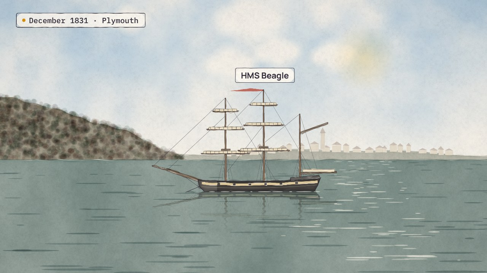

← Anterior · Película 3 de 9
Qué valor gana
Cinco registros vinculados, y los valores aún no coinciden. Declara una regla para cada campo, no un orden escondido en el código.
Temas › Datos maestros y de referencia › El mismo, en todas partes
Catón subió una escalera de cargos públicos, cada uno por un año, y la terminó como censor, anotando a cada ciudadano. Hoy la universidad cuenta a los inscritos en la fecha de censo. Cada noche sus sistemas le dicen a la plataforma cómo ven a Linh ese día, y lo sobrescriben al siguiente, así que cuando Planificación pregunta por el año pasado, ella cuenta como estudiante meses antes de volver. Noor y Mei le dan a cada rol la misma forma: la persona, el tipo de rol, su responsable, con qué se relaciona, y cuándo empieza y termina. Así, una línea en cualquier fecha dice qué roles están abiertos: Linh cuenta una vez, como estudiante que trabaja aquí, la cifra del año pasado queda como era, y un contrato cargado tarde cuenta desde el día en que empezó.
La película está en inglés, con subtítulos en español. Esta página, los capítulos y las preguntas están en español.
Amplía Qué valor gana
Presiona Reproducir, o salta a un capítulo. Activa Pausa para pensar y la película se detiene con una pregunta al final de los capítulos.
Descargar el video (en inglés)Archivos de subtítulosLeer el guion (en inglés)
¿Y ahora?
Las cuatro preguntas de Pausa para pensar, para una clase o un equipo. Abre una para ver la respuesta.
Película 4 de 9.

← Anterior · Película 3 de 9
Cinco registros vinculados, y los valores aún no coinciden. Declara una regla para cada campo, no un orden escondido en el código.

Siguiente · Película 5 de 9 →
Tres nombres para un rol, y un país contado tres veces. Dale a cada lista un responsable, una fecha y un solo hogar.